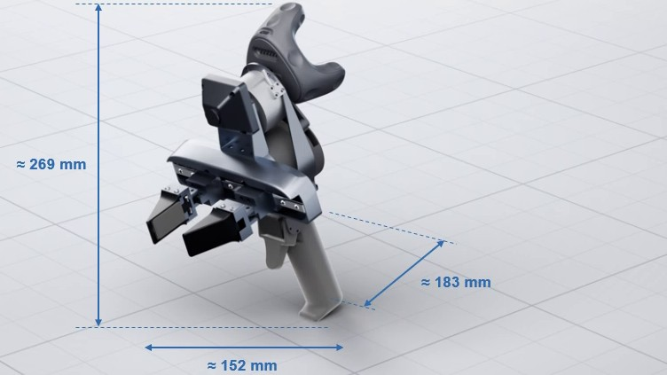
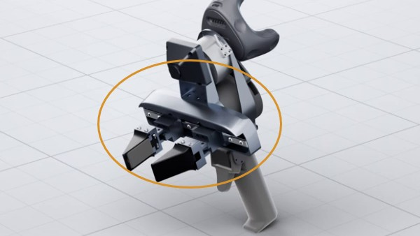

Contact-rich manipulation requires force and tactile feedback, yet such demonstrations remain far scarcer than vision-only data. UMI-style interfaces enable scalable collection, but existing force-tactile designs often compromise ergonomics to isolate wrist wrench measurements and provide only limited gripping force. We present ContactUMI, a motorized handheld interface for collecting visual-force-tactile-motion demonstrations. Motorized actuation and tactile force feedback enable bilateral interaction and high gripping force while decoupling operator input from six-axis wrist wrench sensing. To leverage abundant visual data and scarce contact data, we introduce ContactWAM, a world action model combining visual pretraining with force-tactile post-training. A dedicated contact expert jointly predicts future tactile signals and wrenches alongside video and actions, learning contact evolution beyond conditioning on current contact observations. We pretrain the video and action experts on large-scale vision-only robot data, then post-train the full model on a small force-tactile dataset without changing the visual pathway’s architecture. Across four real-world contact-rich tasks, ContactWAM outperforms vision-language-action, tactile-conditioned, and vision-only world action model baselines. Together, ContactUMI and ContactWAM offer a scalable path from multimodal demonstration collection to contact-aware manipulation.
A narrated overview of ContactUMI and ContactWAM in under three minutes. The sections below tell the same story with figures and clips.
Vision tells a robot where to go, but not how hard to press. In wiping, scraping and screwing, success depends on making and keeping the right contact, which a camera observes only indirectly. Fingertip tactile sensors reveal local contact conditions, and a wrist force/torque sensor measures the resulting interaction loads. Yet demonstrations that include these signals remain far scarcer than vision-only robot data.
Force-tactile robot data — scarce
How can we use both?
Our answer has two parts. ContactUMI is a handheld interface that makes force-tactile demonstrations practical to collect. ContactWAM is a world action model that is first pretrained on large-scale vision-only robot data, then post-trained on a small force-tactile dataset to predict how contact will evolve.
COLLECT
ContactUMI is a motorized handheld gripper in the style of the Universal Manipulation Interface (UMI). It synchronously records the gripper's 6-DoF pose (~120 Hz), the six-axis wrist wrench (1 kHz), tactile images from both fingertips, a wrist fisheye camera and a scene camera (30 Hz), and the gripper motor state (200 Hz). The central design goal is to measure interaction loads independently of the operator's input, while still giving the operator a comfortable handle, a strong grip and informative contact feedback.
3D viewer loads as you scroll
Drag to rotate
The exploded view separates the tracker, the wrist force/torque sensor, the handle with its trigger, the motor, and the finger rail that carries the tactile sensors.
The wrist force/torque sensor sits between the tracker and the gripper in a non-coaxial layout that shortens the lever arm. Machined aluminum keeps the tracker-to-fingertip transform stable, and the same finger rail mounts on the robot for deployment. Size: 152 × 183 × 269 mm.

The trigger only commands the gripper, and a motor supplies the gripping force. The operator never squeezes the fingers directly, so their grip does not leak into the wrist wrench measurement.

A servo renders the fingertip tactile signal as force on the trigger. The operator feels contact and can regulate the grip, closing the loop between hand and gripper.
Because the motor supplies the gripping force, the operator can lift a heavy cordless drill without sustained squeezing, while trigger feedback lets them hold a fragile cracker gently. With feedback disabled, the same cracker breaks. During opening, closing and grasping without external contact, the gravity-compensated wrist readings stay near zero, showing limited coupling of gripper actuation into wrist sensing.
COLLECT
Operators record demonstrations by hand. A live dashboard monitors tracking validity, sensor connectivity and whether each pose is reachable by the target robot's inverse kinematics, and alerts the operator to problems as they happen. A smaller set of robot demonstrations is recorded by kinesthetic teaching on the deployment robot, which carries the same finger rail. Each task uses 500 handheld and 50 robot demonstrations.
Every stream is recorded at its native rate with acquisition timestamps and aligned in software afterwards. The replay below shows all streams of one episode together.
TRAIN
ContactWAM is a world action model trained in two stages. It builds on FastWAM, whose video and action experts are first pretrained on about 787 hours of vision-only video from the RH20T robot dataset. A dedicated contact expert is then added, and the full model is post-trained on the small force-tactile dataset collected with ContactUMI. The contact expert reads the current tactile images and recent wrench history, and predicts future tactile signals and wrenches jointly with future video and actions.
Current tactile images and wrenches describe the present interaction and inform the current action. Predicting their future values adds explicit supervision on how contact evolves, for example at the onset and release of tool contact, so the shared network must learn how scene changes and robot motion produce contact. The two streams are complementary: tactile images capture local fingertip contact, while wrist wrenches capture the resulting interaction loads.
From the current camera frames, tactile images and wrench history, ContactWAM jointly generates future video, tactile images and wrenches together with a chunk of future actions.
At deployment, the future video, tactile and wrench branches are removed and only the actions are generated. Because no retained token attends a future token, the actions are bit-identical to those of the full model, so future prediction adds no cost at run time.
DEPLOY
We deploy ContactWAM on a Flexiv Rizon4 arm fitted with the same finger rail used for collection, on four contact-rich tasks. Each task begins with visually guided approach and grasping, followed by contact-rich manipulation. Every method is trained on the same 500 handheld and 50 robot demonstrations per task and evaluated over 20 trials.
We compare against three baselines: π₀.₅, a generalist vision-language-action policy; FTP-1, a generalist tactile policy; and FastWAM, the vision-only world action model that ContactWAM builds on. Because they differ in architecture, pretraining and sensor inputs, this comparison measures system-level performance. The ablations below share our architecture and isolate individual components.
20 trials per task and method · Paper Table I
ContactWAM reaches 77.5% mean success, compared with 43.8% for π₀.₅, 51.3% for FTP-1 and 45.0% for FastWAM. It improves over FastWAM on every task, with the largest gains on Tape (8/20 → 18/20) and Board (8/20 → 16/20), both of which require sustained tool–surface contact. Lamp remains the hardest task (9/20), since screwing needs precise alignment and a stable grasp throughout thread engagement.
VISION-ONLY POLICY
The vision-only baseline often executes an approximately correct motion but fails to establish or maintain the contact the task needs.
On Box and Tape, we vary which contact streams the model uses. With visual pretraining, predicting both tactile signals and wrenches reaches 92.5% mean success, compared with 75.0% for tactile alone and 70.0% for wrench alone. Keeping both contact inputs but removing their prediction losses (obs) drops success to 72.5%, showing that predicting future contact helps beyond conditioning on current contact.
| RH20T pretrain | Tactile | Wrench | Box | Tape | Avg. (%) |
|---|---|---|---|---|---|
| 8/20 | 4/20 | 30.0 | |||
| ✓ | ✓ | 10/20 | 8/20 | 45.0 | |
| ✓ | 14/20 | 8/20 | 55.0 | ||
| ✓ | ✓ | 16/20 | 12/20 | 70.0 | |
| ✓ | ✓ | 17/20 | 13/20 | 75.0 | |
| ✓ | obs | obs | 16/20 | 13/20 | 72.5 |
| ✓ | ✓ | ✓ | 19/20 | 18/20 | 92.5 |
Tactile / Wrench: ✓ observed and predicted · obs observed only · blank absent
RH20T pretraining raises mean success from 30.0% to 55.0% for the vision-only model and from 45.0% to 92.5% for the full model. Without it, adding contact streams (45.0%) still falls short of the pretrained vision-only model (55.0%): contact information improves physical interaction but cannot replace strong visuomotor priors.
At a fixed 10:1 ratio of handheld to robot demonstrations, success grows from 12.5% with 150 + 15 demonstrations to 92.5% with 500 + 50. Handheld data alone fails (0%), likely because deployment images contain a robot arm absent from the handheld footage, while robot data alone reaches 40.0%. Adding a DINOv3 feature-prediction expert lets a handheld-only model reach 45.0% without robot data or pretraining, a proof of concept for bridging this appearance gap.
| Handheld demos | Robot demos | Variant | RH20T pretrain | Box | Tape | Avg. (%) |
|---|---|---|---|---|---|---|
| 150 | 15 | ContactWAM | ✓ | 4/20 | 1/20 | 12.5 |
| 300 | 30 | ContactWAM | ✓ | 13/20 | 10/20 | 57.5 |
| 500 | 50 | ContactWAM (full) | ✓ | 19/20 | 18/20 | 92.5 |
| 500 | 0 | ContactWAM | ✓ | 0/20 | 0/20 | 0.0 |
| 0 | 50 | ContactWAM | ✓ | 9/20 | 7/20 | 40.0 |
| 500 | 0 | ContactWAM + DINOv3 exp. | 10/20 | 8/20 | 45.0 |